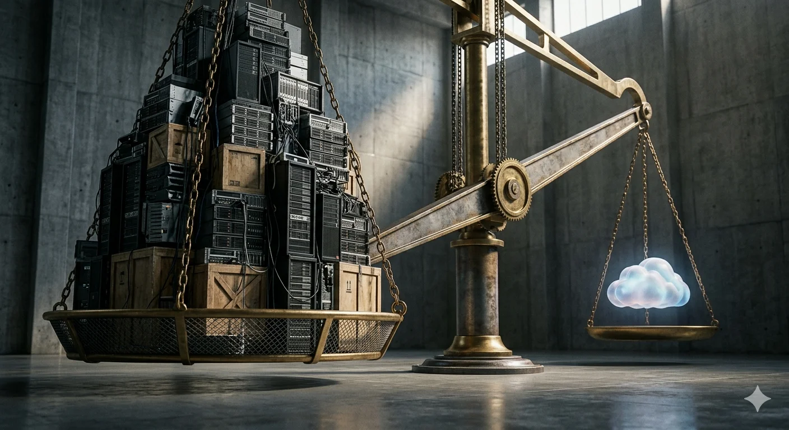
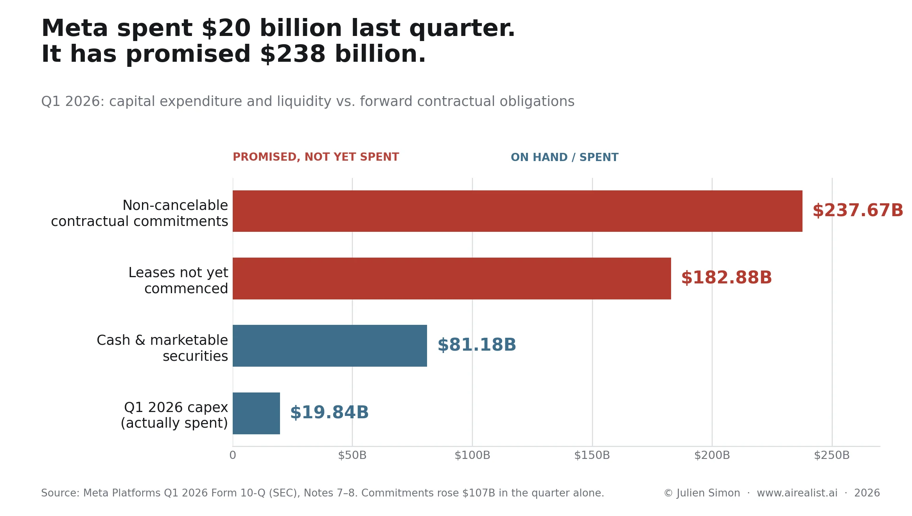
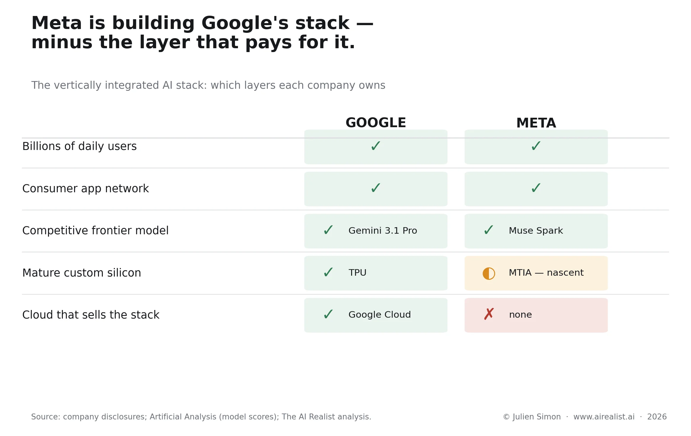

On May 27, asked at Meta’s annual shareholder meeting whether the company would ever take on Amazon, Microsoft, and Google in cloud computing, Mark Zuckerberg said the idea was “definitely on the table.” [1] Then he added the qualifier that matters more than the headline: Meta hasn’t rented out compute “because we think that we have a use for the compute,” and a cloud business becomes an option only “if we get to a point where we feel that we have overbuilt.” [2]
Read that again with the calendar open. Five weeks earlier, on April 24, Meta had signed a deal making it one of the largest customers in the world for Amazon’s Graviton processors — renting compute capacity from a direct competitor’s cloud, explicitly to get access to the silicon it needs now without waiting on its own data centers. [3] So in the same quarter, the only one of the four U.S. hyperscalers that does not sell cloud services [4] was simultaneously a majorbuyerof someone else’s compute and a prospectivesellerof its own. Short and long, on the same balance sheet, at the same time.
That is the contradiction worth chasing. Everyone in AI is supposedly starved for compute — GPUs backordered for months, Amazon’s own training chips shipping slower than it can build them, North American data-center vacancy at 1.4% at the end of 2025. [5] And here is the company building more of it than anyone, raising the possibility that it might have too much. Where does “excess capacity” come from in a world that can’t get enough?
The claim: a put, not a pivot
The answer is that “excess” and “scarcity” are not opposites here. They are the same condition seen from two ends of a balance sheet — and which end you look from determines how you should price Meta.
Meta’s cloud remark is not a product strategy. It is a put option on its own buildout. And the interesting question is whether to read that option asfragilityor asoptionality. Both readings are live. Both are defensible from the same numbers. The piece that follows is about which one the evidence favors, and why the remark itself is the tell.
The numbers frame the tension. Meta raised its 2026 capital-expenditure guidance to $125-$145 billion, up from a prior range of $115–$ 135 billion, citing higher component prices and “additional data center costs to support future year capacity.” [6] As much as double what it spent in 2025, and even at the floor, more than 2024 and 2025 combined. [7] Yet first-quarter capex came in at just $19.84 billion —belowthe $27.57 billion analysts expected. [8] The company spent modestly and guided enormously in the same breath, and the market punished the guidance, not the spend: the stock fell roughly 7%. [9]
The exposure is not in what Meta has spent but in what it has promised to spend. The first-quarter filing carries $237.67 billion in non-cancelable contractual commitments — mostly third-party cloud capacity, servers, network infrastructure, and data centers — against $81.18 billion of cash and marketable securities. [10] Separately, it disclosed $182.88 billion of leases not yet commenced, consisting of data centers, colocations, and network infrastructure that begin between now and 2036. [11] The commitment line jumped by $107 billion in the quarter alone, which chief financial officer Susan Li attributed to multiyear cloud deals and infrastructure purchase agreements. [12] The overbuild, if there is one, does not live in trailing capex. It lives in the contracts — and contracts do not flex when demand disappoints.

The first reading — call it theOverbuild Put— holds that Meta is stacking every available lever to make a buildout look affordable whose paying customer it has not yet secured, and that the cloud remark is the final lever: a backstop buyer of last resort for capacity its own products may not fill. The second reading — call itScarcity Builds the Glut— holds that the overbuild is rational, that an advertising machine of staggering profitability is funding it from cash, that scarcity is real and the surplus will be absorbed, and that the cloud option is genuine upside rather than a distress signal. The rest of this piece develops both, then resolves them.
The mechanism: four levers and a backstop
Start with the paradox, because resolving it is the whole argument.
The compute Meta is renting from Amazon, and the compute it is building is not the same as the compute it is renting. The Graviton deal brings tens of millions of Arm-based CPU cores into Meta’s portfolio — general-purpose silicon suited to agentic inference, the workload that runsaftera model is trained, and available immediately. [3] Hyperion, Meta’s flagship campus in Richland Parish, Louisiana, is a five-gigawatt site built for the next generation of frontiertraining, and it does not come online until 2029. [13] Different silicon, different workload, different clock. Meta is short on the inference capacity it needs this year and long on the training capacity it has committed to for the end of the decade.
That gap — between capacity contracted years ahead and demand demonstrated today — is where “excess” is manufactured. And it is manufactured by the very scarcity panic that justifies the spending. Racing a feared shortage, you commit to gigawatts that arrive in giant, indivisible blocks long before the workloads exist to fill them. The scarcity is what produces the glut. They are the same phenomenon.
Meta’s own answer is that the gap is illusory — that the committed capacity is precisely the inference base it needs to put personal and business agents in front of billions of users, as Li told the call. [14] That may prove right. It is also exactly the demand that has to materialize on schedule for the contracts to pay, and a backstop is what a management team names when it wants insurance against its own forecast.
Now the affordability levers — each of them legal, disclosed, and used across the industry. The question is never whether any one of them is permissible; it is what they add up to. The buildout only proceeds if it can be made to look cheaper than it is.
The first lever is the off-balance-sheet vehicle. Meta financed Hyperion through a joint venture with Blue Owl Capital — Blue Owl owns 80%, Meta 20% — funding construction through a special-purpose vehicle (SPV), Beignet Investor, that raised roughly $27 billion of debt against about $2.5 billion of equity: close to $30 billion in total, the largest private-credit data-center deal on record. [15] The structure keeps the debt off Meta’s books, and the price of that engineering shows in the terms. The bonds, rated A+ by a single agency on the strength of Meta’s backing, priced at a 6.58% yield — roughly 225 basis points over Treasuries, wider than Meta’s own senior notes pay despite the identical credit standing behind them, the premium a charge for the off-balance-sheet structure, and the 24-year tenor — and mature in 2049. [16] This is not a one-off but a template. A second vehicle follows the same logic: a roughly $13 billion structure for a gigawatt campus in El Paso, leaning on the same thin-equity, debt-heavy capitalization that is wildly insufficient if the workloads stall. [17][18] One detail in that deal is its own signal — it has no anchor lender, leaving the banks to syndicate the debt into capital markets rather than place it with a single committed buyer. [17] And these vehicles sit on top of, not instead of, the $58.75 billion of senior notes already on Meta’s own balance sheet. [19]
The second lever is the lease itself. To keep the rating agencies from treating the arrangement as debt, Meta structured the Hyperion lease on a four-year renewable term — short enough that the obligation need not be consolidated onto the balance sheet as a single long-term liability. [20] The debt is real; it simply does not appear where a casual reader of the 10-K would expect to find it.
The third lever is depreciation. Effective January 1, 2025, Meta extended the estimated useful life of a subset of its servers and network equipment to 5.5 years, a change it disclosed would reduce full-year 2025 depreciation expense by approximately $2.9 billion. [21] Lower depreciation flows straight to reported operating income without changing a dollar of cash. The timing is the point: Meta stretched the assumed life of its hardware precisely as it ramped the buildout, flattering the income statement at the moment the spending most needed flattering. The contrast with Amazon is exact. In the same window, Amazonshortenedthe useful life of a subset of its servers to five years, explicitly citing the rapid pace of AI innovation. [22] Two companies, one hardware reality, opposite accounting choices — and Meta picked the one that defers the reckoning. Michael Burry’s public broadside in late 2025, estimating roughly $176 billion of industry-wide understated depreciation between 2026 and 2028, is the bear case for that choice arriving on schedule. [23]
The defense is real: a GPU’s economic life does cascade — from frontier training down to cheaper inference and eventual resale — so a longer book life can be honest rather than cosmetic. But the cascade has to land somewhere. It presumes a profitable second use for silicon Meta has finished training on, and that second use is either internal inference demand or an outside renter. The depreciation assumption and the cloud option are the same bet wearing different clothes.
The fourth lever is the one Zuckerberg named out loud. Each of the first three makes the buildoutlookaffordable; none makes itpay. The vehicles, the lease slicing, the stretched depreciation all assume the same thing — that the compute, once built, generates revenue. The financing analyst on the Hyperion deal said it plainly: Meta has to build the thing, “put workloads in it,” and operate on the presumption that it will monetize those loads later. [24] The cloud option is the answer to the question every other lever begs. If Meta’s own products do not fill the capacity, Meta rents it to someone whose products will — and the debt gets serviced either way. That is what a put is: the right to sell the underlying when you no longer want to hold it.
This is why the Commitment-versus-Spend gap matters so much. A company that has spent $19.84 billion against $237.67 billion in commitments is not yet overbuilt. [8][10] It iscontracted tooverbuild, with the spending back-loaded and the demand unproven. The cloud remark is what a management team says when it can see the gap between the contracts it has signed and the demand it can document, and wants the market — and the credit market in particular — to know there is an exit.
The strongest objection is that this is simply how the cloud business was born. AWS grew out of Amazon’s own internal slack in 2006: build for yourself, find you have spare capacity, rent it out. Selling the excess is not a red flag — it is the canonical path to the most lucrative franchise in enterprise computing. The distinction is sequence and leverage. Amazon converted capacity it already owned into a product before anyone had committed a quarter-trillion dollars of debt-financed, off-balance-sheet capacity to the bet. Meta is committing the capacity first, financing it through vehicles built to keep the debt invisible, and presuming the product will follow. AWS monetized a surplus it stumbled into; Meta is pre-committing to a surplus and naming, in advance, its buyer of last resort. One is discovery. The other is a hedge.
What actually exists
Here, the second reading is at its strongest, and honesty requires giving it full weight.
Meta can build models. For a year, that was an open question. Llama 4 launched in April 2025 to a poor reception; Yann LeCun later told theFinancial Timesthat the benchmark results had been “fudged a little bit,” that the team used different models for different benchmarks, and that Zuckerberg lost confidence in the group and sidelined it. [25] Eleven of the fourteen researchers behind the original Llama left the company; LeCun himself departed in November 2025. [26] The flagship “Behemoth” model was delayed due to performance issues and never shipped as promised. [27] If the thesis were “Meta cannot compete at the frontier,” that history would carry it.
But it isn’t, and the history was reversed. On April 8, 2026, Meta Superintelligence Labs — the division built around the $14.3 billion Scale AI investment and chief AI officer Alexandr Wang — released Muse Spark, which scored 52 on the independent Artificial Analysis Intelligence Index — fourth in the world at launch, behind only Gemini 3.1 Pro, GPT-5.4, and Claude Opus 4.6, and far ahead of Llama 4 Maverick’s 18. [28] Meta is, demonstrably, back in the race. But the profile is spiky in a telling way: Muse Spark’s weakest results fall on exactly the agentic, real-world-work benchmarks that enterprise compute is sold against — it trails GPT-5.4 and Anthropic’s Claude models on Artificial Analysis’s GDPval economic-task evaluation and on Terminal-Bench, gaps Meta itself flagged as priorities for further work — while its standout scores cluster in consumer health and multimodal fluency. [29]
What it did with that model is the crux. Muse Spark is closed. Its weights are not published, and at launch, Meta offered no public API, only a private preview to select users — the model was available free through the Meta AI app and website, and rolling out as the default assistant across Facebook, Instagram, WhatsApp, and Ray-Ban glasses, but not sold to developers as a service. [30] Meta deliberately declined to monetize the intelligence layer externally. The model exists to make Meta’s own products better and to be consumed by Meta’s own three-billion-user base, monetized the way Meta monetizes everything — through advertising, supplemented by new $7.99 and $19.99 Meta AI subscriptions. [31]
And the advertising machine is extraordinary. First-quarter revenue rose 33% to $56.31 billion, the fastest growth since 2021; ad impressions were up 19% and price per ad up 12%; operating income reached $22.87 billion; and the company generated $12.4 billion of free cash flow in the quarter even after capex. [32] This is the heart of the optimistic reading. Meta is funding a generational infrastructure bet out of one of the most profitable businesses in the world, not borrowing against hope. It underperformed expectations in the quarter and retains the discipline to throttle. If the buildout is rational, this is why.
That cushion is thinning fast, though. The $43.6 billion of free cash flow Meta generated across 2025 is set to fall steeply in 2026 as capex roughly doubles — far enough that several analysts now model it turning negative within a year or two. [33] The ads engine funds the buildout today; whether it still does in 2027 is the seam the bear case pulls at.
It also sharpens the problem. A closed model that, at launch, sold nothing to outside developers does not generate external compute revenue. Muse Spark fills Meta’sconsumerdemand, not thecommercialdemand that would absorb a five-gigawatt training campus and service a thirty-billion-dollar SPV. The model’s success and the buildout’s empty revenue case trace to one decision: Meta chose to keep its best work inside the walls. The capacity outside the walls still needs a tenant.
Whose money builds it
If the advertising machine genuinely pays for all of this, one hire is hard to explain. In January 2026, Meta named Dina Powell McCormick, with sixteen years at Goldman Sachs, where she ran the global sovereign investment banking business, later a deputy national security adviser, with the Gulf relationships to match, president and vice chairman. [34] Zuckerberg’s brief for her was specific: partner “with governments and sovereigns to build, deploy, invest in, and finance Meta’s AI and infrastructure,” and build “new strategic capital partnerships” that “expand our long-term investment capacity.” [35] A company that can comfortably fund its buildout from operating cash flow does not recruit a sovereign-wealth dealmaker to expand its investment capacity.
The move follows a path Microsoft, OpenAI, and Amazon have already worn — courting Gulf sovereign-wealth funds to help underwrite AI infrastructure. [36] It is the logic of the SPVs taken one tier further. Private credit moved the debt off Meta’s balance sheet; sovereign capital would move part of the funding burden off the private-credit market, which — as the El Paso deal’s missing anchor lender hints — is showing early signs of indigestion. Each tier widens the circle of people other than Meta who carry the bet.
And it changes what the capacity costs in something other than dollars. Sovereign money is not neutral money. A loan financed by a foreign government carries strings; private credit does not: preferences about where the capacity sits, who gets access, and what the financier expects in return. Meta has not closed such a deal — it has hired the person whose job is to find one. But the direction is the tell. When the cheapest available capital for a buildout is a sovereign-wealth fund, the buildout has outgrown every conventional source, and the question of who holds leverage over Meta’s compute stops being rhetorical.
The mirror: Amazon built the same trap in reverse
The cleanest way to see what Meta is doing is to set it beside the company it is renting chips from.
Amazon is the canonical case of infrastructure reversion: a company that stumbled repeatedly at the intelligence layer — Titan, Nova, the slow developer uptake of its own silicon — and resolved each stumble by retreating to infrastructure it could sell. The difference is that Amazonhasthe infrastructure business. When its models underperformed, it had AWS to monetize the compute regardless, and Bedrock to resell everyone else’s models through its own billing relationship. The reversion worked because the floor was already a product.
Meta has arrived at the same place from the opposite direction. It has the intelligence-layer stumbles. It has the infrastructure. What it lacks is a cloud business that would let the infrastructure pay for itself if the models don’t. The two companies even diverge on the accounting of identical hardware, each in the direction its strategy implies: Amazon, which sells compute and lives with hardware honesty, shortened its server life; Meta, which needs the buildout to look affordable, lengthened it. [21][22]
So the Infrastructure Reversion Test produces a Meta-specific verdict. Reversion is a fallback to a business you already run. Meta is contemplating reversion to a business it has never run, against incumbents who own two-thirds of the market between them, [4] as the backstop for a model strategy that, at launch, sold nothing to outsiders. It closed its models and is now weighing whether to sell the floor beneath them. When the intelligence layer is walled off from outside revenue, the only thing left to sell to outsiders is the raw compute — and that is the layer with the lowest margins and the most entrenched competition.
The bear’s favorite analogy belongs here, and it cuts more sharply than the bulls admit. The dark-fiber buildout of the late 1990s did, eventually, become the backbone of the modern internet — vindication, the optimists say, for building ahead of demand. But the surplus enriched whoever bought it cheaply out of bankruptcy, not the companies that financed and laid it. [37] If Hyperion and its siblings are dark fiber 2.0, the relevant question is not whether the capacity is used. It is who is holding the paper when it does. And the paper here sits with private-credit funds, insurers, and — through target-date and core bond funds — ordinary retirement accounts, layered over a thin equity cushion. [18][38]
This also answers the objection that the SPV debt is the lenders’ problem, not Meta’s. It is both, and the split is the point. Meta’s own direct exposure is comparatively contained — the lease payments it owes the vehicles, plus its minority equity. The structure’s fragility — the thin cushion, the long-dated near-junk debt — sits with Blue Owl, the bondholders, and the insurers behind them. The risk sits there by design. Meta engineered it onto someone else’s balance sheet, which is precisely why it can afford to be sanguine about overbuilding, and why “cloud is on the table” costs it so little to say.
What would have to break
The cloud remark serves as the hinge between the two readings, making this a thesis with a falsification date built in.
If Meta never exercises the option — if Muse-series models scaling across three billion users, plus recommendation and ads inference, plus whatever agentic workloads arrive, actually fill Hyperion and El Paso, and the SPV debt is serviced out of the advertising machine’s cash flow — then the optimists were right. The buildout was a rational forward purchase, the cloud line was idle optionality, the levers were prudent capital management. The end-state even has a name: Meta becomes a second Google — billions of users, a wall of apps, a competitive frontier model, and the custom silicon and data centers to run it all in-house. Google built precisely that stack, and it pays.
But the comparison is where the bull case turns on itself. Google’s vertical integration includes the one layer Meta has conspicuously skipped: it monetizes the same silicon and models externally, renting its TPUs and selling Gemini through Google Cloud — the chips that train Gemini and serve a billion users also collect rent from outside customers. [39] Google fills its own fleet and sells the overflow. Meta closed its model, withheld the API, and runs no cloud; and its silicon program, MTIA, is the least-proven leg of the stack, which is why it still leans on Nvidia, AMD, and rented AWS capacity to do the work TPUs do for Google. [3] Follow the optimistic case all the way to its end, and Meta lands as Google minus the cloud — the exact configuration that makes “cloud is on the table” necessary in the first place. The bull and bear cases converge on the same missing layer.

The market has already begun pricing that gap. On near-identical first-quarter beats, Alphabet’s stock rose about 7% the same day Meta’s fell — the difference resting on the cloud layer that turns AI capex into outside revenue. [40] And independent modeling cited by the Financial Times puts most of the hyperscalers, Meta included, at negative implied returns on AI investment through 2030, even on the generous assumption that the systems cost nothing to run; Amazon, the most mature cloud monetizer, is the lone positive, at roughly 7%. [41]
If Meta does exercise it — if it stands up external compute sales because internal demand fell short of the contracted capacity — then the put was the plan all along, and the levers were what they looked like: a structure for sustaining a buildout whose customer Meta had not secured.
The clock that decides it is already running, and three hands move at once. The physical capacity arrives on a schedule — Prometheus at a gigawatt in 2026, El Paso in 2028, Hyperion’s five gigawatts in 2029. [13][17][42] The SPV debt amortizes on another, with refinancing risk concentrating as the late-2020s maturities meet the capacity coming online. And the depreciation assumption reconciles on a third: if the stretched five-and-a-half-year life proves optimistic, the write-downs land in precisely the 2026–2028 window Burry flagged. [23] Demand, power delivery, and refinancing have to line up on the same timeline for the optimistic case to hold. [38] Each runs on its own logic, and none waits for the others.
There is a reason the credit market is already watching rather than the equity market. Meta’s five-year credit-default swaps had no liquid market until November 2025 — there was little to insure, because until then Meta funded itself largely from its own cash rather than from debt. [43] The CDS exists today because Meta became a borrower, and it has widened alongside Oracle’s, the cohort’s weakest credit, whose five-year spread has sat near 200 basis points since the spring — its highest since the 2008–09 financial crisis, and roughly quadruple its mid-2025 level. [44] JPMorgan now sells a hyperscaler CDS basket — Alphabet, Amazon, Meta, Microsoft, Oracle — so institutions can hedge a category of risk that barely existed eighteen months ago, against five names carrying $969 billion in commitments with $662 billion of data-center leases not yet commenced. [45] The instrument to bet against Meta’s buildout was built before Meta finished building it.
Weigh it, and the tension does not fully resolve — but it tips. The advertising business is strong enough that the optimistic case cannot be dismissed, and the first-quarter underspend shows real discipline. Yet a management team that genuinely expected internal demand to fill its capacity would not need to remind shareholders, with the CDS trading and the commitments at a quarter-trillion dollars, that it could always rent out the capacity. You name the exit when you can see the scenario that requires it. The most revealing thing Zuckerberg said in May was not that the cloud is on the table. It was the condition attached:if we feel that we have overbuilt.He is pricing the probability himself.
Meta is the one hyperscaler that built the cathedral before it had a congregation. “Cloud is on the table” is the sound of a company that has noticed, and is letting its lenders know there is a door.
Notes
[1] Mark Zuckerberg, remarks at Meta’s annual shareholder meeting, May 27, 2026, as reported in Jonathan Vanian,“Mark Zuckerberg says a Meta cloud computing business ‘definitely on the table,’” CNBC, May 27, 2026.
[2] Ibid. Zuckerberg: “We haven’t done that yet because we think that we have a use for the compute,” and the option arises “if we get to a point where we feel that we have overbuilt.” The conditional framing is load-bearing for this piece: Meta did not announce a cloud business; it named an option contingent on overbuild.
[3] Meta and AWS press releases, April 24, 2026; see“Meta Becomes One of World’s Largest Customers of Amazon AI Chips,” PYMNTS, April 24, 2026(Graviton Arm cores, “tens of millions” of cores, positioned for agentic inference). Graviton is an Arm-based CPU, not a GPU; reporting that the deal also covers Trainium/Inferentia is less firmly sourced and is not relied on here.
[4] “Of the four U.S. hyperscalers, Meta is the only one that doesn’t sell cloud infrastructure and services”; AWS holds roughly a third of the market, with Microsoft and Google together holding another third. CNBC, May 27, 2026 (n.1);TechRadar, “Meta cloud computing business ‘definitely on the table,’” May 2026.
[5] North American data-center vacancy fell to 1.4% at year-end 2025, perCBRE’s North America Data Center Trends, H2 2025; JLL’s year-end 2025 read put the primary-market vacancy rate near 1%. On Trainium supply, AWS has stated demand exceeds production:TechCrunch, “An exclusive tour of Amazon’s Trainium lab,” March 22, 2026.
[6] Meta Platforms,“Meta Reports First Quarter 2026 Results,” April 29, 2026(guidance raised to $125–145B from $115–135B; rationale: “higher component pricing... and, to a lesser extent, additional data center costs to support future year capacity”). SEC / Meta IR.
[7] 2025 full-year capex was $72.2 billion; 2026 guidance is nearly double that figure.Fortune, “Meta just bumped its 2026 capex forecast up to as much as $145 billion,” April 29, 2026.
[8] Q1 2026 capital expenditures (including principal payments on finance leases) were $19.84 billion, below the $27.57 billion StreetAccount consensus. Meta 10-Q /“Meta Q1 earnings report,” CNBC, April 29, 2026.
[9] Shares fell roughly 7% (intraday as much as ~10%) following the capex guidance raise. CNBC (n.8);Yahoo Finance, April 30, 2026.
[10] Non-cancelable contractual commitments of $237.67 billion as of March 31, 2026, described in the 10-Q (Note 8, Commitments and Contingencies) as “mostly related to third-party cloud capacity arrangements and continued investments in servers and network infrastructure, data centers, and consumer hardware products in Reality Labs,” with ~$42.25B due in 2026 and ~$47.65B in 2027; cash, cash equivalents and marketable securities of $81.18 billion.Meta Q1 2026 10-Q, SEC.
[11] Operating and finance leases not yet commenced of approximately $182.88 billion as of March 31, 2026, “consisting of data centers, colocations, and certain network infrastructure,” commencing between the remainder of 2026 and 2036, with terms from greater than one year to 30 years.Meta Q1 2026 10-Q, Note 8, SEC.
[12] Susan Li, Meta Q1 2026 earnings call, April 29, 2026: “These multiyear cloud deals and our infrastructure purchase agreements drove a $107 billion step up in our contractual commitments this quarter.”Meta Q1 2026 earnings call transcript.
[13] Hyperion: Richland Parish, Louisiana; ~5 gigawatts; completion expected 2029. Blue Owl / Meta joint-venture announcement and coverage.PE Insights, “Blue Owl and Meta close record $30bn financing,” 2025.
[14] Susan Li, Meta Q1 2026 earnings call, April 29, 2026: the infrastructure investments “will support our training needs for future models and, most importantly, provide us the inference capacity necessary to deliver personal and business agents to billions of people.”Transcript(n.12).
[15] Meta Platforms,“Meta Announces Joint Venture with Funds Managed by Blue Owl Capital to Develop Hyperion Data Center,” October 2025(Blue Owl 80% / Meta 20%; ~$27B debt to PIMCO and other investors plus ~$2.5B equity; largest private-credit data-center deal on record).
[16] Bonds issued by the Beignet vehicle were rated A+ by S&P (single agency, reflecting Meta’s backing), priced at a 6.58% yield (~225 bps over Treasuries), fully amortizing, maturing 2049.Yahoo Finance / WSJ, “Meta’s $27 billion bet,” October 31, 2025; PE Insights (n.13).
[17] “Sopaipilla”: ~$13 billion SPV for a gigawatt-scale data center in El Paso, Texas, expected online 2028; Morgan Stanley and JPMorgan leading and, unlike the PIMCO-anchored Hyperion deal, may offer the debt to capital-markets investors rather than place it with an anchor. Bloomberg, via“Meta Taps Morgan Stanley, JPMorgan for New Data Center Deal,” Advisor Perspectives, May 5, 2026.
[18] On the inadequacy of the thin equity cushion in these data-center SPVs — typically on the order of 10% equity against a debt-heavy structure — seePaul Kedrosky, “SPVs, Credit, and AI Datacenters,” June 2025. Reported Meta vehicles, including a triple-net leaseback arrangement involving Apollo, have been described at roughly 90% debt / 10% equity (Covenant Lite, “Meta’s $29 Billion Bet with Apollo,” July 2025); whether that arrangement is distinct from the Blue Owl–led Hyperion financing or an earlier account of the same raise is not independently confirmed, and the body does not treat it as a separate vehicle.
[19] Carrying amount of long-term debt (fixed-rate senior unsecured notes) of $58.75 billion as of March 31, 2026.Meta Q1 2026 10-Q, Note 7, SEC.
[20] Meta structured the Hyperion leases in four-year increments so rating agencies would not treat them as debt.The Information, “The Creative Dealmaking Behind Meta’s $30 Billion Data Center Financing,” reported via Michael Parekh, November 2025.
[21] Meta Platforms Form 8-K, FY2024 results: “In January 2025, we completed an assessment of the useful lives of certain servers and network assets, which resulted in an increase in their estimated useful life to 5.5 years, effective beginning fiscal year 2025... we expect this change in accounting estimate will reduce our full year 2025 depreciation expense by approximately $2.9 billion.”SEC.
[22] Amazon shortened the useful life of a subset of its servers and networking equipment to five years in early 2025, citing the rapid pace of AI and machine-learning innovation — the opposite direction to Meta.DeepQuarry, “Depreciation of GPUs: between useful lives and useful myths,” December 2025.
[23] Michael Burry’s late-2025 argument that hyperscalers understate depreciation by using five-to-six-year lives for hardware with a real economic life closer to two-to-three years, estimated at ~$176 billion of understated depreciation industry-wide across 2026–2028; Nvidia publicly rebutted. WSJ, “The Accounting Uproar Over How Fast an AI Chip Depreciates,” December 8, 2025; CNBC, November 25, 2025. (Burry comparison to Cisco circa 2000, not Enron.)
[24] Paraphrased from the financing analyst quoted on the Hyperion structure: Meta must build the facility, place workloads in it, and presume future monetization of those workloads. WSJ via Yahoo Finance, October 31, 2025 (n.16).
[25] Yann LeCun, interview with Melissa Heikkilä, Financial Times, published January 2, 2026: Llama 4 benchmark “results were fudged a little bit,” the team “used different models for different benchmarks to give better results,” and Zuckerberg “lost confidence in everyone who was involved” and “sidelined the entire GenAI organisation.” FT (subscription); reproduction:Fast Company, “Yann LeCun: Meta ‘fudged’ on Llama 4 testing,” January 2026.
[26] Eleven of the fourteen researchers who created the original Llama left Meta; LeCun departed in November 2025. Maginative, “Meta Goes All-In on ‘Superintelligence,’” June 2025;The Next Web, “Meta hires five Thinking Machines Lab founders,” April 2026.
[27] “Behemoth” (the planned ~2-trillion-parameter flagship) was repeatedly delayed on performance and not released in promised form; the GenAI organization was sidelined ahead of the Superintelligence Labs reorganization. Maginative (n.26); Wikipedia, “Meta Superintelligence Labs” (secondary, for chronology only).
[28] Muse Spark scored 52 on the Artificial Analysis Intelligence Index v4.0, fourth globally behind Gemini 3.1 Pro (57), GPT-5.4 (57), and Claude Opus 4.6 (53); Llama 4 Maverick scored 18. Artificial Analysis was given early access to benchmark independently.Artificial Analysis, “Muse Spark: everything you need to know,” April 8, 2026. Note: Meta’s own claim of 50.2% on Humanity’s Last Exam used a multi-agent “Contemplating” mode with tools; the independent single-agent figure was 39.9%. Treat vendor mode-specific claims separately. The #4 ranking reflects the index at launch (April 8, 2026); the leaderboard has since shifted as newer models posted higher scores.
[29] Artificial Analysis (given early access by Meta) scored Muse Spark 52 on its Intelligence Index v4.0, 4th at launch. On GDPval-AA — Artificial Analysis’s evaluation of economically valuable, real-world office tasks — Muse Spark scored roughly 1,427 Elo (Meta’s own reported figure was 1,444), behind GPT-5.4 (~1,672) and Anthropic’s Claude Opus 4.6 (~1,606) and Sonnet 4.6 (~1,648), though ahead of Gemini 3.1 Pro Preview (1,320); it likewise trailed the leaders on Terminal-Bench Hard. Meta flagged long-horizon agentic systems and coding workflows as areas of continued investment. Most non-composite Muse Spark figures are Meta-reported: because the model is closed (no open weights; Meta AI app and a private API preview only), independent evaluators such as Vals.ai and BenchLM had not posted independent scores as of late May 2026.Artificial Analysis, “Muse Spark: everything you need to know,” April 8, 2026;VentureBeat, April 8, 2026.
[30] Muse Spark launched closed-weight, distributed free through the Meta AI app/website and rolling out as the default assistant across Meta’s platforms and Ray-Ban glasses, with no first-party public API at launch (Artificial Analysis benchmarked it via early access; Bloomberg reported the design and code would not be made public). Artificial Analysis (n.28);aitoolbriefing, “Meta’s Muse Spark Drops — And It’s Closed Source,” April 9, 2026. API availability may change; the claim is specific to launch.
[31] Meta is testing Meta AI subscriptions at $7.99 and $19.99 per month.Intellectia, “Zuckerberg: Meta May Enter Cloud Computing Market,” May 2026.
[32] Meta Q1 2026: revenue $56.31B (+33% YoY, fastest since 2021); ad impressions +19%, price per ad +12%; income from operations $22.87B; free cash flow $12.4B. Net income $26.77B included an $8.03B tax benefit (underlying EPS $7.31). Meta Q1 2026 release / 10-Q (n.6, n.8, n.10);CoinDCX earnings recap, April 2026.
[33] Meta’s full-year free cash flow was $43.59 billion in 2025 (Meta Q4/FY2025 release, SEC 8-K). Sell-side projections for 2026 fall sharply as capex roughly doubles — one widely cited Street estimate has full-year free cash flow dropping toward the high single-digit billions (IND Money, citing Street estimates) — and several analysts now model free cash flow turning negative across the AI-infrastructure cohort in 2026–2028; Barclays specifically projected a roughly 90% decline in Meta’s 2026 free cash flow after the raised guidance.CNBC, “Tech AI spending approaches $700 billion in 2026, cash taking big hit,” February 6, 2026.
[34] Meta named Dina Powell McCormick president and vice chairman, announced January 12, 2026; she spent 16 years at Goldman Sachs, where she led its Global Sovereign Investment Banking business, served as deputy national security adviser in the first Trump administration, and most recently was president at BDT & MSD Partners. She had been a Meta board member from April to December 2025.Axios, “Meta taps Dina Powell McCormick as president and vice chairman,” January 12, 2026;Advisor Perspectives, January 12, 2026.
[35] Zuckerberg said Powell McCormick would focus “on partnering with governments and sovereigns to build, deploy, invest in, and finance Meta’s AI and infrastructure”; Meta added that she would “drive an effort to build new strategic capital partnerships and find innovative ways to expand our long-term investment capacity.” Axios (n.34);AGBI, “Meta hires former Trump adviser to focus on Middle East deals,” January 16, 2026.
[36] Microsoft, OpenAI, and Amazon have made AI-infrastructure investment deals with Gulf-based sovereign-wealth funds, many focused on building data centers in the US and the Gulf. AGBI (n.35).
[37] In the late-1990s telecom buildout, the large majority of fiber laid sat dark for years and bandwidth prices collapsed; the surplus later became the backbone of Web 2.0, benefiting those who acquired it cheaply rather than those who financed it.“The AI Infrastructure Bubble,” Development Corporate, November 2025.
[38] AI-infrastructure debt is reaching retail retirement accounts through target-date and core bond funds; the bull case “requires demand, power delivery, and refinancing to line up on the same timeline.”Seeking Alpha, “Your 401(k) Is Funding AI’s Data Center Buildout,” May 14, 2026.
[39] Google Cloud sells external access to its Tensor Processing Units (TPUs) — the custom silicon that also trains Gemini and serves Google’s own products to over a billion users — through Compute Engine, Google Kubernetes Engine, and the Vertex AI / Gemini Enterprise Agent Platform, and offers Gemini models commercially on the same platform.“Tensor Processing Units (TPUs),” Google Cloud product page, accessed May 2026.
[40] On April 29–30, 2026, Alphabet and Meta both beat first-quarter estimates and both raised capital-expenditure guidance, yet Alphabet’s stock rose roughly 7% while Meta’s fell roughly 7% — a divergence widely attributed to Alphabet (like Amazon and Microsoft) operating a cloud business that converts AI investment into external revenue, which Meta lacks.CNBC, “Investors still trust Google more than Meta when it comes to spending their money on AI,” April 30, 2026.
[41] Modeling by Panmure Liberum, cited by the Financial Times, finds that most major US hyperscalers — Microsoft, Alphabet, Meta, and Oracle — show negative implied returns on AI investment over 2025–2030, even under the generous assumption that building and running the AI systems costs effectively nothing; only Amazon is positive, at roughly 7.2%, reflecting its more mature external cloud monetization. One published account put Meta’s implied figure near −29%. This is forward-looking modeling, not realized return.IBTimes UK, “Big Tech’s AI Gamble Shows Negative Returns Despite Surge in Spending,” May 30, 2026; figure for Meta via Sherwood/Yahoo Finance coverage of the same FT analysis.
[42] Prometheus, a ~1-gigawatt data center, is scheduled to come online in 2026.Trending Topics, “Meta’s Comeback: Muse Spark,” April 12, 2026.
[43] Meta’s (and Alphabet’s) five-year CDS did not begin trading until November 2025; before that these companies funded AI expansion from their balance sheets rather than debt markets, so there was little single-name CDS interest.Mellon Investments, “Record-Breaking AI-Related Debt Issuance in 2025,” December 15, 2025(Bloomberg data).
[44] Oracle’s five-year CDS has sat near 200 basis points since spring 2026 — its highest since the 2008–09 financial crisis and roughly quadrupled from its mid-2025 level (≈198 bps reported late March–April 2026).BondbloX, “Oracle’s 5Y CDS Spread Hits All-Time Highs,” March 31, 2026;The Motley Fool / Yahoo Finance, April 10–11, 2026. A specific basis-point level for Meta’s own CDS is not independently confirmed here and is deliberately not stated.
[45] JPMorgan launched a hyperscaler CDS basket (Alphabet, Amazon, Meta, Microsoft, Oracle) in March 2026, in $25M blocks with $5M per name; the five issued $121B in bonds in 2025 (vs. a $28B annual average 2020–2024), with total commitments of $969B and $662B in data-center leases yet to commence.Winbuzzer, “JPMorgan Launches CDS Basket to Hedge AI Debt Risk,” March 24, 2026(citing Fortune).